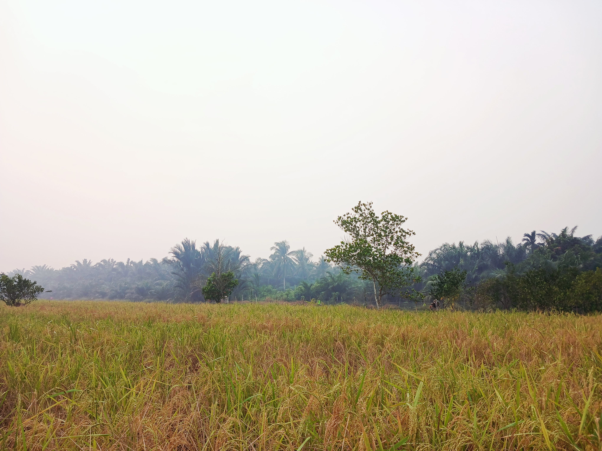
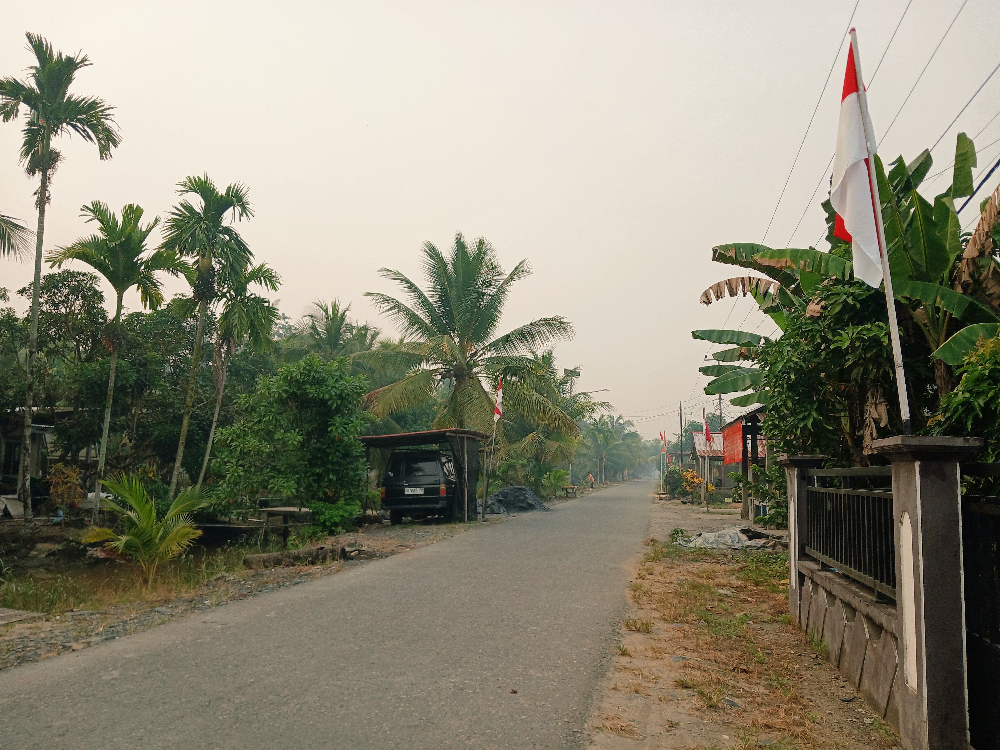

Kantor Desa
Pusat pelayanan pemerintahan dan administrasi masyarakat Desa Pusaka.
Mengenal lebih dekat sejarah, potensi, fasilitas, kegiatan, dan kehidupan masyarakat Desa Pusaka.
Jelajahi Desa →Desa Pusaka merupakan bagian dari Kecamatan Tebas, Kabupaten Sambas, Kalimantan Barat.
Desa Pusaka memiliki kehidupan masyarakat yang dekat dengan alam serta berbagai aktivitas sehari-hari yang menjadi bagian penting dari kehidupan desa.
Website ini dibuat untuk memperkenalkan Desa Pusaka kepada masyarakat luas dan menjadi media informasi mengenai desa.
Cerita yang diwariskan dari generasi ke generasi mengenai asal-usul Desa Pusaka.
Berbagai potensi desa menjadi bagian penting dari kehidupan masyarakat Desa Pusaka.
Pertanian menjadi salah satu sektor penting dalam kehidupan masyarakat Desa Pusaka.
Lingkungan hijau dan suasana pedesaan menjadi bagian dari keindahan Desa Pusaka.
Kebersamaan dan kegiatan masyarakat menjadi kekuatan dalam kehidupan desa.
Mengenal berbagai fasilitas yang tersedia untuk mendukung kegiatan dan kebutuhan masyarakat Desa Pusaka.
Pusat pelayanan pemerintahan dan administrasi masyarakat Desa Pusaka.

Sarana ibadah dan kegiatan keagamaan masyarakat Desa Pusaka.

Fasilitas pendidikan untuk mendukung kegiatan belajar masyarakat.

Sarana transportasi yang menghubungkan kawasan permukiman masyarakat.

Tempat untuk kegiatan masyarakat dan berbagai kegiatan desa.
Berbagai aktivitas masyarakat menjadi bagian dari kehidupan sehari-hari Desa Pusaka.



Menikmati suasana alam dan lingkungan pedesaan melalui berbagai pemandangan Desa Pusaka.



Informasi mengenai Desa Pusaka dapat diperoleh melalui pemerintah desa dan saluran komunikasi yang tersedia.